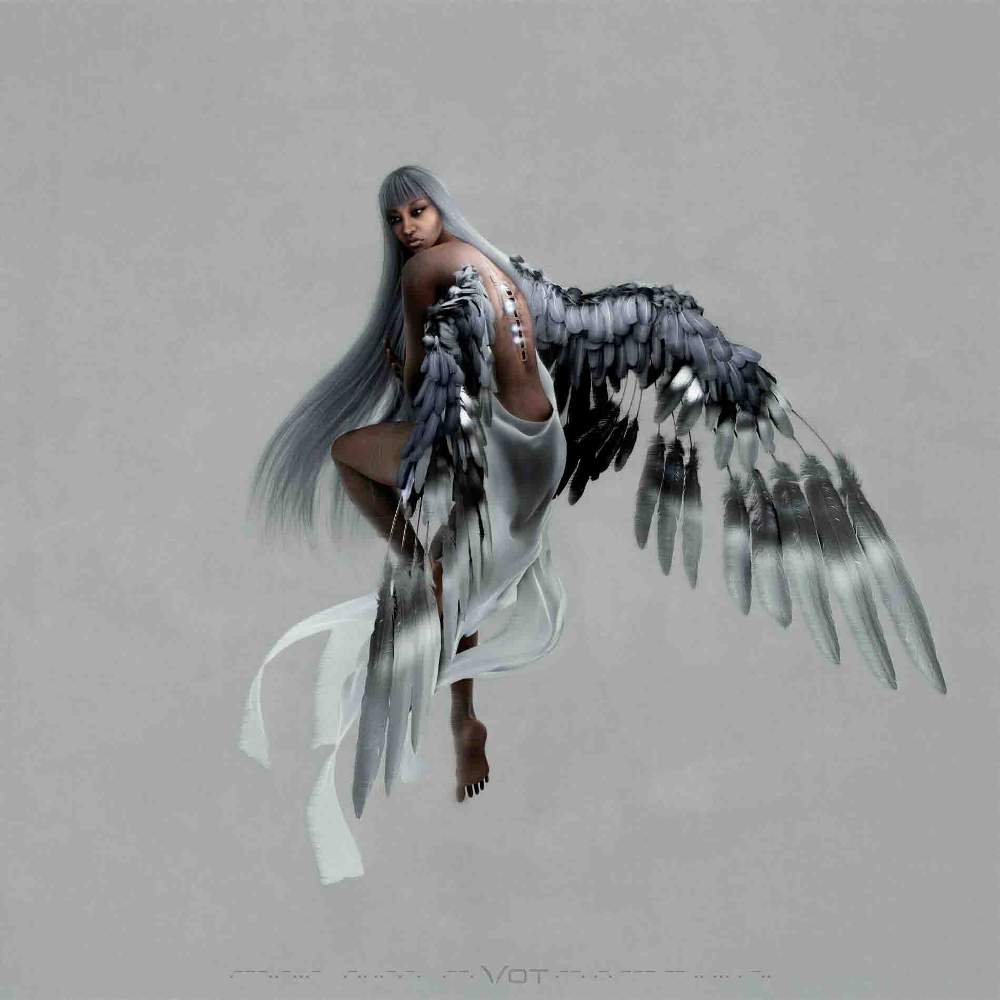

![](project-detail.html?title=DIGITS238%20F/W25%20SHOOT%20AUDIO&tag=Audio&media=media/TEASER_AUDIOTEST_SNARE.mp4,media/digits_diegetic.mp4,media/digits_kick.mp4,media/digits_foley1.mp4,media/digits_foley2.mp4,media/digits_rec.jpg,media/digits_fx.mp4,media/digits_wip.mp4,media/digits_insta1.jpg,media/digits_insta2.jpg&text=During the summer of 2025, my good friend Matthew Kenney asked me to produce the audio for the latest drop from DIGITS238, a Vancouver based skateboard clothing brand. Kenney was the lead creative director for the entire drop, taking care of basically every end of the visual process from the actual design of the clothing to the launch on media platforms. The shoot took place in Vancouver, with some hired models and a cool shoot location. All of the audio from the shoot was decided to be scrapped, so I recreated the entire audio, diegetic and not, from scratch in all of the sequences. There was one main teaser clip which introduced just the clothing, along with 5 reels format clips featuring the models wearing the clothing. Kenney planned the entire collection to have a Vietnam war era vibe, so the audio was to match. I researched what streets ambiance would have sounded like in that era, as well as what radio could have sounded like. I added era-appropriate aeronautical vehicle engine noises and drill seargent chatter in the background to give the scene a more military barracks feel. From the radio, I made it seem like a repetative coded message using the nato phonetic was playing, spelling out DIGITS. For the main teaser clip, we were experimenting between using a drill song, and marching snares. We ended up using the marching snares as they gave a more era appropriate feeling but also a feeling of anticipation.){kind=link}
DIGITS238 F/W25 SHOOT AUDIO
Audio
Audio production for videos showcasing the release of the F/W25 DIGITS238 collection.
![](project-detail.html?title=YMCA%20COMMUNITY%20IMPACT%20STORIES&tag=Film/Video&media=https://youtu.be/LT4iL9_ZX0E?si=r3Pti9yrwp-683i3,https://youtu.be/KdQ9-uqZUCM?si=8feH-yLAf3oLEIad,https://youtu.be/_U-LPfJVC1o?si=U6XwMRu05TmaXMA3,https://youtu.be/YnF-PTiEf4s?si=1wgq959btkXUXBIb,https://youtu.be/tzW3VJOVBkk?si=_eJu6tZdsNTTdE3J&text=In the summer of 2024, I was hired by the YMCA of Southern Interior BC through an internship in order to create six mini documentaries to bring awareness to various Child and Youth development programs in need of funding. I approached the films from a investigative lens, opting to find stories through asking questions. Each video consisted of a single shoot day, with about half an hour of interviewing and half an hour of b-roll shooting. I tried to come in with around 20 questions about the program. My goal in the interview process was to make the interviewee feel as comfortable as possible, so I would try to keep the interview process very natural, like a conversation, which often led to the best responses. One critique I have for myself for this project is that all the videos are monologue heavy. There is too much to be said, and too little time, I wish I employed the idea of 'show, don't tell' more. If I were to re-do this project, I would take a different approach, where rather than interviewing, I'd like to follow around the subject for the day, and just film their day to day. It would be much more interesting to capture, for example, a young parent navigate problems in their day-to-day life rather than just say that they encounter problems. This project was shared on YMCA SIBC social networks and at a donor event in October at the Kelowna Innovation Centre where I delivered a speech sharing my own personal story going to the YMCA and then getting to make this project to over 100 local donors and YMCA staff. The entire project was quite low-budget, I was working with a single camera, lav mics, and a tripod. I also had a secondary camera and some portable lighting that I used occationally. &link=¶graph=The choice to interview each person in front of a window was unintentional to begin. The first interview was with Doug at Alternative Suspension, and the room where we were interviewing was so small that I had to have him sit in front of the window. I really liked the look though, and thought it fell in line with the YMCA's Shine On branding. To me the window behind the subject implied a sense of optimism - a world beyond the room - allowing natural light to fall behind the subject. It created some difficult lighting situations, but I'm happy that I kept it consistant throughout the entire project. For b-roll, I would tell everyone I was shooting to just pretend I wasn't there, and I would try to just stay off to the side to capture genuine moments.&singleMedia=media/ymca2.jpg,media/ymcacut.jpg){kind=link}
YMCA COMMUNITY IMPACT STORIES
Film/Video
A series of mini documentaries showcasing the YMCA of Southern Interior British Columbia's Child and Youth Development Programs.
![](project-detail.html?title=CONTAINING%20MYSELF&tag=Installation&media=https://youtu.be/PbrhvASma5g,media/CONTMY/CONT1.jpg,media/CONTMY/CONT2.jpg,media/CONTMY/CONT3.jpg,media/CONTMY/CONT4.jpg,media/CONTMY/CONT5.jpg,media/CONTMY/CONT6.jpg,media/CONTMY/CONT7.jpg,media/CONTMY/end1LQ.mp4&text=Containing Myself is an extension of my experiments with sound and visuals. My work often explores the relationship between the audio and the visual, so naturally I was introduced to oscilloscopes. I approach oscilloscope visualizations by producing and orchestrating manipulations to audio waveforms to draw shapes. I use produced audio with an oscilloscope emulator combined with other moving images to create an experience which draws on feelings of containing emotions, recalling memory, and the sublime. The fogginess of the box with projected abstract shapes and blurry moving images emulates a plethora of abstract personal memories which are unattainable to fully relive. The title, Containing Myself, reveals the box as holding human experiences. As not being able to contain oneself is to spill out emotion, the emotions held within this box are those that have been contained and never shown. I am interested in the containing of emotions, being half-Japanese, I grew up very cognisant of showing my own emotions. Growing up and learning how to express myself more freely in a different culture helped me realize the power of contained emotions. There is a notion of sublimity in the large scale of the projection and in the audio. The harmonic chords are similar to those of a bagpipe, an instrument that has a sense of sublimity, and to throat singing which has connections to eastern spirituality and the sublime. The oscilloscope creates mandala-like shapes which also connect to eastern spirituality and the sublime. &link=¶graph=Containing Myself was exhibited in the Context Not Included exhibition at the University of British Columbia Okanagan from April 19th to April 26th 2024. I started planning the project in October 2023. Initially it was supposed to be a reactive light installation in the south end stairwell of the Creative and Critical studies building. I was planning to buy programmable string christmas lights and use a software called xLights and an arduino or raspberry pi to control the lights, but the cost of entry was very high and the site location of the stairwell was not guaranteed. I didn't end up actually hearing any confirmation about if I would be allowed to use the stairwell until well into March, which stalled my whole process as my project was meant to be site specific. Eventually, I shifted my idea to be something that did not have to be site specific, and to work in more moving picture and audio, which are my two biggest strengths. Starting in March, I began to sketch out ideas for what actually became Containing Myself. Originally, I wanted to have a glass box, and project up through it from the bottom, projecting some sort of colour changing gradient that would mimic the aurora borealis. I did try some renditions of these visuals later on, but decided that rigging something that could project from the bottom would have been quite difficult and would limit my options. I had to also get creative with the contsruction of the box itself as lumber was very expensive and not easy to disassemble and reassemble. Glass proved to be very expensive and heavy - not to mention fragile. Eventually, I settled on pvc pipes as they were light weight and easy to take apart and move. The next challenge was finding a material that was clear enough to project through, but durable enough to worked with. In my first version, I used clear cling wrap to encase the box, but since the wrap was so narrow, you could see all the overlaps in between wraps. I looked at using fabrics such as tulle, or even custom ordering thick clear plastic table covers, but I ended up finding a very cheap and effective solution that matched the aesthetic of the project. Plastic drop sheeting for painting at home depot was like 12 bucks and wide enough that I could cut pieces that covered an entire face, and the rolls were big enough to laast me multiple set ups.&singleMedia=media/CONTMY/WIP1.jpg,media/CONTMY/WIP3.jpg,media/CONTMY/WIP9.jpg,media/CONTMY/WIP12.jpg¶graph2=The next challenge was making the visuals. I had a couple ideas in mind. Either to use Touchdesigner to make generative visuals, or to continue my exploration or oscilloscopes and incorporate them + personal footage to create a sort narrative. When doing intitial test of projecting in my first setup of the box, I used the Wavescanner oscilloscope visuals, and I loved how they appeared through fog. They created a laser-like effect because of their bright, thick lines. I decided to produce an audio piece, changing parameters in my oscillator to manipulate how it looked. I could have gone the route of using an oscilloscope drawing program, but decided that the exploration of manually making the oscilloscopes was more fun. I made a bunch of different variations of osciiloscopes and then combined them with personal footage to make an experience that to me felt like what memories look like, which eventually inspired me to call the project Containing Myself. The box to me was a metaphor for one's own mind. It contained all these memories and abstract emotions that were contained. The fog was representative of thoughts, foggy and mystical, and being only being held back by a thin film. I wanted the visual and audio to make it feel like it could breach out of the box at any moment, and yet still be contained to this one simple box. I ended up finishing the entire sequence on an overnighter at the university with a couple other classmates. It was super fun, but we started going a bit crazy once the sun began coming up. Super satisfied with how this project turned out, it ended up being nominated for the Dean's award at the opening. I'd love to explore something using this medium again in the future, because the possibilities seem endless.&singleMedia2=media/CONTMY/WIP7LQ.mp4,media/CONTMY/WIP16LQ.mp4,media/CONTMY/WIP17.mov,media/CONTMY/WIP18.jpg){kind=link}
CONTAINING MYSELF
Installation
Containing Myself is a multi-media installation consisting of oscilloscope visuals combined with personal archival footage to create an audio-visual experience drawing on themes of nostalgia and the self.
![](project-detail.html?title=CONTEXT%20NOT%20INCLUDED&tag=Exhibition&media=media/IMG_5369.jpg,media/cni1.mp4,media/cni2.jpg,media/cni3.mp4,media/cni4.jpg,media/cni5.mp4,media/cni6.mp4&text=Context Not Included was the fourth year joint BMS-BFA exhibition, held in the Creative and Critical Studies building at the University of British Columbia Okanagan from April 19th to April 26th 2024. In this exhibition, students showcased their year's work. BFA students presented a curated selection of their bodies of work, while BMS students presented a single project that they had been working on throughout the entire year. This exhibition was entirely run by students of the BMS and BFA programs. Planning occured over several months and multiple days of prep were necessary to make it all happen. Each student volunteered for a commitee, having to work together with a group to organize and execute tasks. I chose to volunteer for the events comittee where I helped set up A/V for the night and also provided a curated playlist for BGM during the opening. Big thanks to all the faculty members, students, and volunteers who could make this possible.&link=¶graph=){kind=link}
CONTEXT NOT INCLUDED
Exhibition
The fourth year joint BMS-BFA final gallery exhibition and capstone project. This exhibition was fully planned and operated by the 2024 BMS-BFA graduating class.
![](project-detail.html?title=OKANAGAN%20VISUALIZATION%20AND%20INTERACTION%20LAB&tag=Graphic Design&media=media/ovi2.jpg,media/ovi3.jpg,media/ovi4.jpg,media/ovi5.jpg,media/ovi6.jpg,media/ovi7.jpg,media/ovi8.jpg,media/ovi9.jpg,media/ovi10.jpg,media/ovi11.jpg,media/ovi12.jpg,media/ovi13.jpg,media/ovi14.jpg,media/ovi15LQ.mp4&text=Between April 2023 and April 2024, I worked as a graphic designer and undergraduate research assosiate at the Okanagan Visualiation and Interaction lab. Here, my daily tasks were to design various graphics, visualizations, and logos, create slide deck templates for open house, conference, and proposal presentations, help out with research studies, and help design the layout of research papers. If anything needed to be made to look more presentable, it would go through me. I would often just help each induvidual researcher with making thier papers and presentations look as good as possible, which is important in a field where your work has to stand out in an ocean of other works. I worked under the awesome proffesor Dr. Pourang Irani and Dr. Yumiko Sakamoto. Our main focus at the time was a collaboration with Honda Research Institute of Japan to help create an educational companian robot named Haru. One of the most fun projects to be a part of was helping with the iSteam summer camps at UBCO over the summer. These summer camps saw groups of around 20-30 kids rotate through educational classroom activites. Our lab introduced the kids to Haru, and let them interact with the robot. The kids could ask Haru questions and it was always super fun to see their reactions to talking to a robot for the first time. We also put EEG devices on their heads and let them play Flappy Bird by using their eye blinks as input for the flaps which the kids always loved. My job was to document each session as we used these sessions to show Honda for them to see Haru in action in classroom settings. It was my first real office setting type job, working with peers all who had thier own projects, it was super fun and I am so thankful for the opportunity. I made so many awesome connections there and got to see so many cool things.&link=¶graph=){kind=link}
OKANAGAN VISUALIZATION AND INTERACTION LAB
Graphic Design
Various areas of media creation including design of logos, slidedecks, research papers, data visualizations, video documentation, photography, as well as research assistance.
![](project-detail.html?title=WAVE%20SCANNER&tag=Installation&media=https://youtu.be/fO5qKyM2sg8,media/WAVESCANNER-1.jpg,media/WAVESCANNER-2.jpg,media/WAVESCANNER-3.jpg,media/WAVESCANNER-4.jpg,media/WAVESCANNER-5.jpg,media/WAVESCANNER-6.jpg,media/WAVESCANNER-7.jpg&text=In Wave Scanner, I combine generative projection with produced audio to create a unique experience. The projection is generated using an oscilloscope renderer which visualizes the waveforms of audio being fed through it. All of the visuals are choreographed by modulating only sine waves, the simplest audio form, mixing them with other waveforms, and manipulating the phase and panning of the waveforms. This project interacts with the sublime in many ways. The mandala-like appearance of the waveforms connects to eastern spirituality. The act of sitting and experiencing the projections and audio relates to eastern meditative practices, and the projected waveform on the stomach draws similarities to eastern ideas of chakra. The audio is inspired by cathedral organs in its chordal structure and timbre connecting to ideas western spirituality. Sine waves are used in the audio due to their pureness, manipulability, sub-bass qualities, and the fact that sine waves are fundamental to countless things in our universe. There is an association that large things make low sounds. With the audio only using bass frequencies and below, the project feels larger in scale than it actually is. The projection to the chest combined with the subwoofer behind the viewer's back creates a visceral experience, making the viewer directly connect the projected waveforms to the audio waves traveling through their own stomachs. The vibration creates a “butterflies in the stomach” like experience which feels both strange and relaxing. The viewer must succumb to the control of the machine which brings a sense of uncontrollability. This is heightened when the experience starts to break down and the overwhelming incomprehensibility of glitches disrupts the user's experience.&link=¶graph=This project was installed and exhibited in Beyond Reality: The Digital Sublime, an end of term exhibition for the awesome proffesor Myron Campbell's VISA 382 class. In the exhibition, I used VPT6 and a webcam in order to trigger the projection to start as the user would sit down in the chair, which led to a much more immersive experience where the user would feel like they were really getting scanned. The idea for it came about when the techs at the gear rental room in the Creative and Critical Studies building were throwing away two pretty big subwoofers. I immediately sniped them and went home and just started playing with them. I was also experimenting with oscilloscopes at the time and I think the whole thing came together to fit into the class theme of the sublime very well. The entire exhibition was so so good, there were so many unique works which fun ways to interact with them. So glad to have had this in such a fun exhibition with other awesome artists.&singleMedia=media/ws2.jpg,media/ws3.jpg,media/ws4.jpg,media/ws6.mov){kind=link}
WAVE SCANNER
Installation
Wave Scanner is a multimedia installation consisting of projected oscilloscope visuals and produced sub bass frequesncy audio, both cast onto the stomach to create a visceral experience.
![](project-detail.html?title=PRESS%20PLAY%202024&tag=Audio Production, Mentorship&media=media/pp6.jpg,media/pp1.mp4,media/pp2.mp4,media/pp3.mp4,media/pp4.mp4&text=The 2024 Press Play project, spearheaded by the amazing Dr. Karis Shearer of the University of British Columbia's AMP lab consisted of an AR installation cohort, led by proffesor Myron Campbell and mentored by Kai Hagen, and a lightbox installation cohort, led by proffesor Tara Nicholson and mentored by Matthew Kenney. Kenney and I were a part of the 2023 rendition of the Press Play project which saw similar AR installations be installed in the University of Exeter and Downtown Kelowna. We were brought back in 2024 to mentor the new cohort and help guide them achieve their goals. I also took on the role of audio producer for each of the AR projects. The AR cohort included Ronnie Cheng, Lauren Naidoo, Kailee Fawcett, and An Tran. The AR cohort was working with archival recordings of BC poet Fred Wah and were to use his recordings as inspiration for their AR stills and animation. Each student had their own unique interpretation and direction they wanted to go, and we did not hold back at all what was possible. It was awesome to see each student speak passionately about their idea and give constructive feedback to each other. I sat in during meetings and helped guide the students along side Myron Campbell, as I had experience doing a project almost exactly the same as them thee year prior. The projecet took place from January 2024 to May 2024 and was capped off with an opening at the Rotary Centre for the Arts in Kelowna which included the unveiling of the AR banners and other banners from artists from the Faculty of Creative and Critical Studies.&link=¶graph=This cohort was so fun to be a part of. I want to thank and acknowledge the AMP lab and Dr. Karis Shearer for putting together a project that I think really helps emerging artists get good experience planning, producing, and installing. The Press Play project unfortunately came to a close in 2024, but I really truly hope that there will be something similar to take it's place so that future students of Media Studies or Fine Arts can have the same opportunities I did to be able to thrive.&singleMedia=media/pp5.jpg,media/pp7.jpg,media/pp9.jpg,media/pp10.jpg){kind=link}
PRESS PLAY 2024
Audio Production, Mentorship
Mentorship and audio production for the final year of the UBCO Amp lab's Press Play project.
![](project-detail.html?title=270%20SADLER%20RD.&tag=Photography&media=media/Sadler-1.jpg,media/Sadler-2.jpg,media/Sadler-5.jpg,media/Sadler-6.jpg,media/Sadler-7.jpg,media/Sadler-8.jpg,media/Sadler-9.jpg,media/Sadler-10.jpg&text=In this untitled project, I interact with past feelings involving identity, place, and time through creating images inside of my childhood home. The images tell a story of the formation of my identity being raised in a half Japanese and half Canadian, low-economical status, and Seventh Day Adventist household. With the recent redevelopment of the land around my childhood home and my own slow departure into the next phase of my life, I immortalize the environment which raised me and revisit the feelings that once chose to keep any details of my identity that made me different hidden under a cover. By presenting these images in a gallery setting, they are exposed to the eyes of any person - no longer bound to the walls of my own home - and are up for discussion to share the similarities and differences between my own upbringing and others. This expository view is supported by the use of a blaring flash for certain images and is contrasted with dark lighting for other images creating a scene capturing the stillness of the home without human presence. The camera used is a Nikon Coolpix 4600, a camera very similar to one that my parents owned when I was growing up. The visual style creates a feeling of nostalgia, which is an overarching theme of the project.¶graph=I wanted to create a work that involved my own identity, something that I had never done before. With the current rezoning of the area around my childhood home and the imminent coming of my departure from my home, I decided to interact with the idea of homes and the identity that forms from them to immortalize my childhood home and reconcile with my own past personal perspective of me and my family. Growing up in a pretty homogenous small town on the low end of the economic spectrum, Seventh Day Adventist, and half-Japanese, I was always aware of my unique identity and never fully embraced myself. In recent years after some self-reflection, I find the house that I grew up in as having many unique quirks and contradictorily some of the things that I used to think were specific to my own family as being relatable for other families as well. In the process of this project, I was able to introspectively interact with the feelings that I used to carry surrounding my identity growing up. There was somewhat of an uncomfortable feeling that I initially had sharing photos of my childhood home. Growing up, I was hyperconscious of my childhood home because I thought that it was full of hard to explain religious and cultural material as well as embarrassingly frugal quirks. Looking back, I may have had a bit of an exaggerated perspective, but the feeling still lingered around until recently which made the sharing of the home that I had sheltered from other eyes feel uncomfortable. The process of sharing these images really made me realize both the similarities and differences between my experiences growing up and others. From the beginning of the project, I had a clear idea of what type of photos I wanted to integrate and how to display them, so over the course of the critiques, I slowly implemented feedback and slight changes. The original idea was to focus on specific quirks around the house, singling out a few objects as a diorama and using the flash of the Coolpix camera to flash the objects, “exposing them” to be seen in a gallery-like setting. The idea shifted slightly when after the first couple of shoots, I really liked the images which included a more zoomed out view, showing a sense of presence, making the space feel lived in, for example in the dining table image and couch image.&singleMedia=media/Sadler-11.jpg,media/Sadler-12.jpg){kind=link}
270 SADLER RD.
Photography
A photographic project which discusses themes of otherness, redevelopment, growing up, religion, and immigration.
. This untitled horse film depicts the story of a work horse that grows up with dreams of one day becoming a race horse. The film comments on the rapid change in the humour of younger generations and the shortening of their attention spans. I began with an idea that people my age and younger aren’t able to sit through slow, deep art films at galleries. The film subverts the expectations of art viewers in exhibition settings by starting out as a slow paced “art film” but breaks these expectations by introducing a style of film (“corecore”) that only younger generations can seem to grasp. This helps contrast the horse’s life before vs. after containment. I invite the viewers to consider questions such as: What forms of media can be displayed as art? What differentiates an art from a shitpost? I’ve always wanted to do a project bringing internet meme culture into an art setting. The payoff of seeing this film on a big screen at the film festival was worth it. My friend’s dad leaned over after it played and said “that was interesting”… not sure if he got it. We are all the horse, just wanting to break free from containment.¶graph=Artist Statement: Through this work, I explore the evolution of generation Z internet humor and the implications that social media has for future attention spans and humor. I am referencing the new internet phenomena of “corecore” but begin the film by emulating most common experimental art films and their demands to be taken seriously. By bringing meme and internet references into an art setting, I subvert the expectations of the viewers. By shifting from a slow paced, abstract film to a mish mash of content rarely displayed within art settings, I give the viewer a chance to compare the contrast between cultures viewed within a gallery and cultures viewed within the internet. The analogy of a horse wanting to break free from its given life to become a race horse in an unconventional way is paralleled with our own desires to break free from a life of containment and rules to live life more freely, even if it means being a horse in a bicycle race. I employ viewers to question what makes art appropriate and what other ideas from outside of art culture can be displayed as art.&singleMedia=media/u2.jpg){kind=link}
UNTITLED HORSE FILM
Film
A film about a horse who was born a work horse but wants to be a race horse. Nominated into the Student Okanagan Film Festival.
![](project-detail.html?title=WIFI%20MAP%20OF%20KELOWNA&tag=Photography&media=media/w1.jpg,media/w2.jpg,media/w3.jpg,media/w4.jpg,media/w5.jpg,media/w6.jpg,media/w7.jpg,media/w8.jpg,media/w9.jpg&text=In this project, I take a photographic approach to documenting the wifi naming cultures of different neighbourhoods in Kelowna. My set up was a GoPro camera taped to my passenger window with a remote app on my phone to control the shutter. I rolled around Kelowna in my car while glued to my phone screen looking at the wifi names all day and found some interesting results. I found that there were a lot of character and comedy in wifi names around Rutland. In neighbourhoods like Dilworth and Crawford Estates, the names tended to be more vanilla and optimistic. It was a super fun project to really pay attention to the digital world and compare it to the physical world around it. I was inspired to make this from the Montreal Sound Map, an online interactive mapping website where users can post field recordings and geo tag them, creating an informative and archival source of sounds recorded in the Montreal area. The free trail of MapMe, the website that I used to make the map has unfortunately expired, so there is no more working version of the map.&singleMedia=media/wi1.jpg,media/wi2.jpg,media/wi3.jpg,media/wi4.jpg,media/wi5.jpg){kind=link}
WIFI MAP OF KELOWNA
Photography
An investigation of the different wifi naming schemes around different neighborhoods of Kelowna.
{kind=link}
ART ON THE LINE
Art Auction
Two pieces were submitted and then sold at the Art on the Line Fundraiser for the University of British Columbia Okanagan's Faculty of Creative and Critical Studies. Participated as an event volunteer as well.
. I was a student in Dr. Murphy's digital humanities class in 2021 so I was super honoured to hear that she wanted me to assist setting up her lab. We started the branding package entirely from scratch, which I had never done before but the entire experience was super fun. I also had support from proffesor Myron Campbell, my digital media proffesor, and would consult him about tips and tricks for starting a branding package from scratch. Dr. Murphy and I began by having a long chat about the lab entirely - it's purpose, it's vision, it's goals - and Dr. Murphy also showed me the project which she was working on, and all of her inspirations. We started a Milanote mood board and collected images of everything that was inspiring to her: Graphic novels, woodblock printing, the modernist movement/era, 19th-20th century logos and type, dance notation, Rossum's Universal Robots, re-mediation/digitization, velvet, Flamenco, faded colours. From the mood board I had a clearer vision of where to begin. We decided to make a master logo which was pictoral and could be used stand alone, along with a type/secondary logo.¶graph=I began sketching many variations of master logos and full logos. I found the suffix Re captivating. It could mean so many things, and be used in so many ways. Re media, Re imagine, Re vision, Re search, Re cover, Re post... there were just so many ways that just the Re could be used, so I wanted to incoorporate it into the master logo. I eventually settled on a version of the logo which included the Re in a circle before the word Media. The Re was meant to look like a button or stamp that had been scanned and digitized. I manually added noise and distortion later on to make it look like it had been digitized. The circular Re logo also reminded me a lot of mid 20th century logos with it's simplicity and emblematic look. From there we had conversations around type. I think type was a very central part of the logo, a lot of the labs visuality came from the type. We researched various fonts which were modernistish and settles between Helvetica, and Futura... two timeless and uber popular modernist fonts, almost encompassing the modernist movement as a whole with the amount in which they are used. I created various renditions of the logo in different fonts including Helvetica and Futura, but we eventually decided on a version of the logo where I had combined and manually edited the Helvetica and Futura fonts together.¶graph2=Along with the logos, I produced a colour pallate, which ended up being a jadey green, an energetic red, and black and white. We decided these colours represented the lab the best. The red was similar to a velvet in the light, and the green was meant to emulate old book covers or bakelite plastic. I also produced a style sheet for written documents, a letterhead template, slideshow templates and custom themes for them. The entire project was super fun, the team at ReMedia was awesome to work with and it was a pleasure to work under the amazing Dr. Emily Murphy. This was my first branding project from scratch and I feel like it was a major success. Not to be biased, but I think the ReMedia lab has the coolest branding in the school ;P. &singleMedia=media/relogos/r1.png,media/relogos/r2.png,media/relogos/r3.png,media/relogos/r4.png,media/relogos/r5.png,media/relogos/r6.png,media/relogos/r7.png,media/relogos/r8.png,media/relogos/r9.png,media/relogos/r10.png,media/relogos/r11.png,media/relogos/r12.png,){kind=link}
REMEDIA LAB
Branding
Entire branding package including logos, type, colour, slide templates, document templates, and assets for Dr. Emily Murphy's Remedia Lab at the University of British Columbia Okanagan.
LOCKED IN
Film
A short film sequence for film class. Focuses in this project were lighting, set design, camera work, and sound.
{kind=link}
NOSEBUTTER AT AMBIEN
Music
Debut of Nosebutter at the first ever Ambien at Spanicarts in Calgary, AB. Industrial techno and hardstyle.
![](project-detail.html?title=PIXEL%20PARTOL&tag=Photography&media=media/pixel2.jpg,media/pixel3.jpg,media/pixel4.jpg,media/pixel5.jpg,media/pixel6.jpg,media/pixel7.jpg,media/pixel8.jpg,media/pixel9.jpg,media/pixel10.jpg,media/pixel11.jpg,media/pixel12.jpg,media/pixel13.jpg,media/pixel14.jpg,media/pixel15.jpg&text=A little photography project for photography class. The class prompt was the long moment vs. the short moment. We were meant to capture a series of photographs that compared a long moment to a short moment... however you interpreted that. I decided that for my long moment, I would use the panorama feature on an iPhone, as it captures an array of times and glues them together. For the short moment I just used a simple single shot. I used the panorama to give an effect of multiple limbs. I tried to make it look like there were creatures that were chasing me in the digital realm. The distortions from the panorama made it look like the world is falling apart while I try to evade a patrol of digital legs. The colouring is meant to copy the Matrix, the green tint kind of just hinting that this is all digital. The display sequence is intentional, I'm kind of relating to graphic novel panels, and I use the chaos of random placement to add drama into the scene, making it feel like everywhere that you look, there are legs coming after you. The photos of Kenney at the end are extras from when I was playing around with the panorama tool. They're fun and fit the narrative, but I decided the final sequence would make more sence if it was just me running away from ambiguous legs.){kind=link}
PIXEL PATROL
Photography
An experimental photography project using the iPhone panorama feature to create distorted figures.
{kind=link}
I_MADE_THESE_FOR_A_SHOW_IN_AUGUST
Music
The debut project of Nosebutter. Played for the first time at CC^2, at the Contemporary in Calgary, AB.
{kind=link}
VOT AT MUSIC WASTE FESTIVAL
Music
Vot live at Victory Square in Vancouver, BC, for Music Waste Festival.
{kind=link}
 project is a local initiative building community resilience to prevent youth suicide in the Central Okanagan is co-led by IHLCDP Associates, Dr. Sana Shahram and Dr. Katrina Plamondon, both Assistant Professors in the School of Nursing at UBC Okanagan. CLARITY began in 2018 as a community-driven act of care and response to the tragic loss of young people in the Okanagan due to suicide. The CLARITY team challenges conventional notions of resilience and youth suicide prevention by looking upstream and to community-building. It shifts the concept of resilience away from something born out of exposure to trauma, and toward something that is created together in community. By listening for direction and inviting partnership, CLARITY is a long-term research initiative that focuses on systems-level interventions, transforming the structures that create barriers to resilience and put youth at risk.' (taken from the CLARITY website). After meeting and discussing with the lead researchers, our team began brainstorming how to create the documentary. The researchers asked if we could film with various youth organizations and get youth perspectives. They wanted the film to be youth oriented. Our plan was to film with three separate organizations and have a spokesperson and youth from each organization talk to many questions we had about youth mental health and community building. We had many days of filming is various locations spanning around six months.¶graph=The project began very smoothly but we soon started hitting road blocks. A lot of the organizations we were filming with had no idea we would be coming, or little knowledge about the CLARITY project. This was a task to handle as for everyone we had to interview, we also would have to do a lot of explaining, which initially, we didn't fully know everything so it was difficult to explain. It was all of our first time creating a documentary with funding, but we had support from the awesome Ramey Newell, without her I think we would have crumbled. As the months went on, the work load became higher and higher, and with fourth year studies and capstone projects on the go, we decided to hand the film off to an editor to put together and finalize. That is the last we have heard of the film. What I have to show here is our fine cut version of the film which was the state of the film when we handed it off to the editor.&singleMedia=media/clarity1.jpg,media/clarity2.jpg){kind=link}
CLARITY DOCUMENTARY
Film
A documentary for the CLARITY project - a project looking to reduce youth suicide, created for nursing researchers from the University of British Columbia's Faculty of Health and Development.
![](project-detail.html?title=PRESS%20PLAY%202023&tag=Art Installation&media=media/exeter/1.jpg,media/exeter/2.mp4,media/exeter/3.jpg,media/exeter/4.jpg,media/exeter/5.jpg,media/exeter/6.jpg,media/exeter/7.jpg&text=In the winter of 2023, Kenney and I applied for an opportunity through the AMP lab at the University of British Columbia Okanagan called Press Play. We were hired along side two first year students, Ains and Austyn. Press Play was a collaboration between the UBCO's AMP lab, Concordia University, and the University of Exeter's Digital Humanities lab. In our project within Press Play, we were to use the University of Exeter's archives of poetry from the Lancashire cotton famine as inspiration for large scale augmented reality installations. Neither me or Kenney were familiar with this event before the project and had some fun researching it through Dr. Simon Rennie's online database of cotton famine poetry. We met every week for a couple months to plan, then we pitched our projects to Dr. Rennie. I produced the audio and Kenney designed the print. We were mentored by proffesor Myron Campbell, who really helped us through the project. In May of 2023, the Press Play cohort all travelled to the University of Exeter in order to install the artworks and deliver talks at the Digital Humanities lab there. This trip was just over a week long and we got to tour the University of Exeter's campus, meet the digital humanities team and see thier lab. When we got back to Kelowna, our prints were installed on the art walk outside of the Rotary Centre for the Arts and was displayed there for an entire year. ¶graph=Written in my notes: This entire experience has not felt real. I never in a million years thought that I would get the opportunity to install our artwork internationally, nor work with researchers and University databases to help create art. This whole trip has just felt so perfect, in part to amazingly meticulous planning, and it is a trip that has inspired me and has left me feeling motivated to start new projects, reach out to different countries for work and to consider new ideas for my education. The opportunity to have a cross cultural project is so interesting. It is so interesting to learn about different cultures and to collaborate with such amazing and interesting people. The relationship between the Amp Lab and the University of Exeter’s DIHU lab is a model for what collaboration between two research labs that feel like siblings can look like, with each propping each other up and building a new community. My favorite part of this trip was probably either the presentation day where we presented our artwork in front of researchers and others from the University of Exeter, or simply just walking around and meeting people, and looking at things. One of the most inspiring things for me is just walking around and experiencing new things and I’d find myself on walks through Exeter feeling super inspired and motivated to create something new with these new experiences.&singleMedia=media/exeter/8.jpg,media/exeter/9.jpg,media/exeter/10.jpg,media/exeter/11.jpg){kind=link}
PRESS PLAY 2023
Art Installation
An augmented reality installation with Matthew Kenney for the University of British Columbia Okanagan's AMP Lab. Press Play is a collaboration between the AMP lab and the University of Exeter's Digital Humanities lab. Installed in Downtown Kelowna and the University of Exeter.
![](project-detail.html?title=VOT&tag=Music&media=media/votalbum.jpg,media/vot/1.jpg,media/vot/2.mov,media/vot/3.mov,media/vot/4.jpg,media/vot/5.jpg,media/vot/6.mov,media/vot/7.mov,media/vot/8LQ.mp4,media/vot/9HQ.mp4,media/vot/10.jpg,media/vot/11.jpg,media/vot/12.jpg&text=The Vot project began in the summer of 2020 after I had met Vot for the very first time while I was working at Value Village. I was in grade 11 at the time and working after school at Value Village when an interestingly dressed girl approached me at the jewlery showcase and asked for my help trying on rings. She was super curious with me and just started asking me questions with confidence. We exchanged Instagrams and soon after learned that we both made music. We would gas up each others music every time we would release and kept in touch with each other for a while. One day, after a couple months, in the spring of 2020, V called me and asked if I wanted to produce an album for her. I instantly said yes and then we started meeting up to talk music. 4044 was the first ever song that we made together, it started out with a demo that she sent me of a feeling, which I expanded on to make bigger and bigger. From there she came up with the alias Vot and we scoped out a vision for the entire album. We spent about 2 years just writing and producing and making together until she moved to South Korea. This whole time I was in university and was still working a couple jobs and she was across the globe so the project slowed down a bit, but in the fall of 2022 we locked back in and reached out to mixers for certain songs to lighten my load and I mixed the rest of the album. The project was released to stores in the spring of 2023. Pretty much had to learn the entire music creation pipeline from scratch. From recording in the studio to chopping to editing to structuring... Each song was produced by myself, and I also mixed and mastered most of the songs. This is the biggest music project that I have been a part of and has become such a big part of my life.){kind=link}
VOT
Music
The debut project of Vot. A full length album which started in 2020. The start of the Vot universe.
![](project-detail.html?title=WAVESWAVESWAVES&tag=VR Installation&media=https://youtu.be/hVjHjQTruAU&text= The relationship between audio and visual is something that I love to explore in my visual works. In this project, I wanted to create a new way to experience music. When people think of virtual reality, they usually imagine a visual experience. I tried to break that idea and make a primarily audio based virtual reality experience where rather than exploring a visual space with auditory aid, the user would be exploring a space of mapped audio with visuals as aid. My goal was to motivate the listener to explore the scene and move around to be able to isolate sounds and change the sound of the scene based on where they are. I did this by placing the initial audio sources in floating points around the users head to push the user to inspect these points closer and learn about the interactions as they listened. The visuals follow the music and get more sporadic and colorful as the song progresses. The experience follows a story about waves, read by a text to speech software, which is supposed to be an internal monologue. It can be interpreted in many different ways but I was primarily relating waves to emotions, and I used music theory tools and production in order to try and get the listener to feel different waves of emotions throughout the experience. I could go on and on about the music theory and symbolism behind all the sounds but that would not fit in this statement. I challenge the listener to find all the ways that waves are represented in this project. In this project, I wanted to create a new way to experience music. When people think of virtual reality, they usually imagine a visual experience. I tried to break that idea and make a primarily audio based virtual reality experience where rather than exploring a visual space with auditory aid, the user would be exploring a space of mapped audio with visuals as aid. My goal was to motivate the listener to explore the scene and move around to be able to isolate sounds and change the sound of the scene based on where they are.&singleMedia=media/wave1.jpg,media/wave2.jpg){kind=link}
WAVESWAVESWAVES
VR Installation
A VR sound experience exhibitied in an exhibition in the University of British Columbia's Visualization and Emerging Media Studio and in UBCO's FINA gallery as a part of Unpresedented.
A REPTILE DYSFUNCTION
Film
A second year film project where we were tasked with creating an entire film in small groups. We did not take this very seriously.
VANS CONTEST VIDEO
Film
An edit made for ONE boardshop and Vans Canada showcasing new pro model boots.
{kind=link}
SIMPLE UNIVERSES
Processing
Tryptic installation of a Processing sketch in the Living Things festival at the Kelowna Rotary Centre for the Arts.

THC BIOMED
Photography/Branding
Product photography and digital design for Canada's first medical marajuana producer. Photos used in Cannabis stores across Canada.

KAISEI
Music
My first ever music alias, created in high school, which became Tokai-800.
{kind=link}